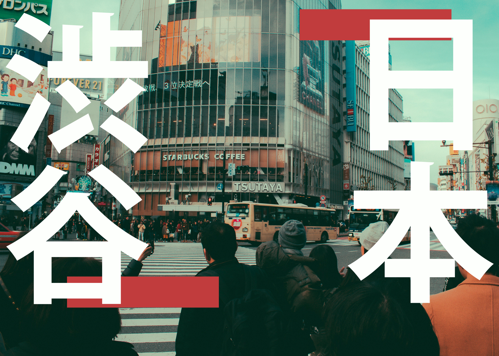

This series of designs are from my Graphic Design class where I had to make postcards of a country and I chose Japan. I included I picture I took from when I was there(below) while the others are stock images I edited on Photoshop. I chose Japan because it was an interesting place to go to and every nook and cranny of the country is picture-worthy. For these designs, I used white and red in reference of the country's flag colors. I wanted the text to stand out and appear vertically just like in traditional Jpanese text style.
